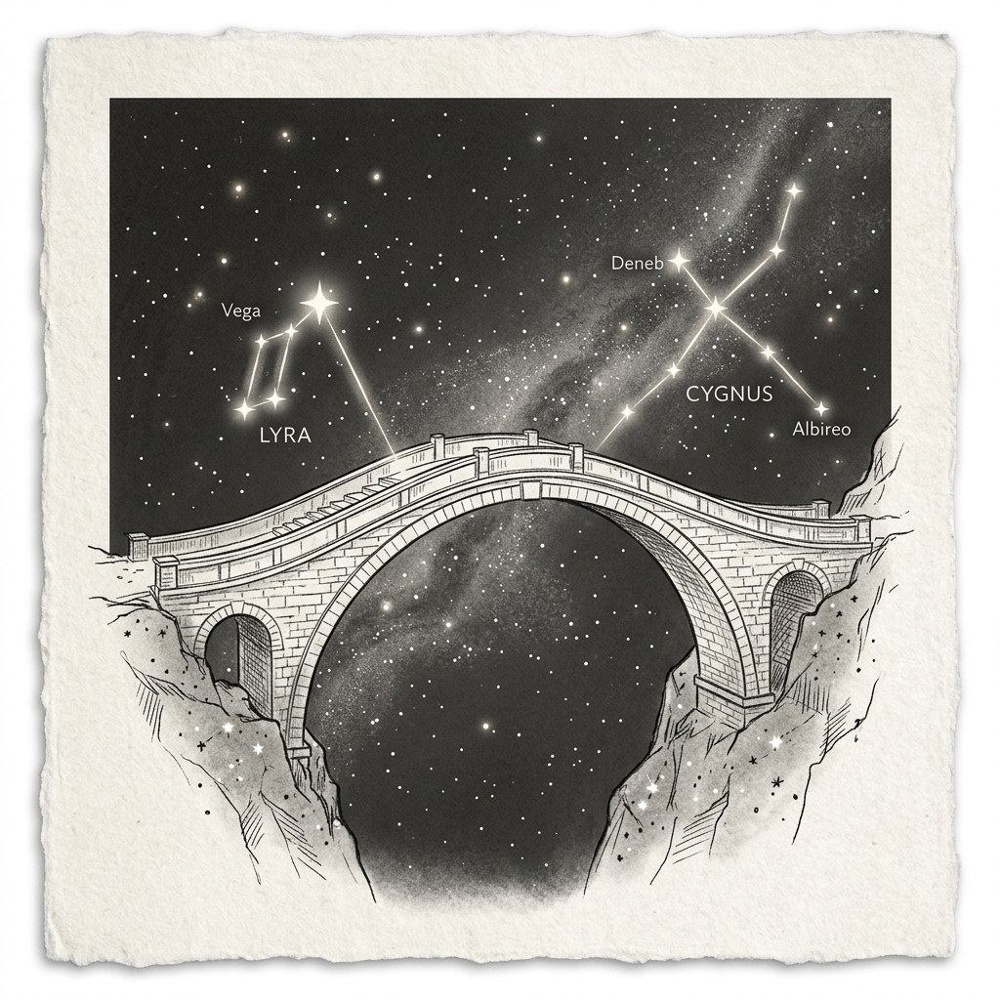

사랑의 오작교
먼 은하의 양단에 서서 그대를 그리워하는 밤마다 까마귀와 까치가 허공을 가르며 날아오릅니다. 하늘마저 흐르는 별들의 강도 우리의 마음까지 갈라놓지 못하리니, 서로를 향해 다가서는 걸음 끝에서 우리는 마침내 하나가 되어 만나리라.
먼 은하의 양단에 서서 그대를 그리워하는 밤마다 까마귀와 까치가 허공을 가르며 날아오릅니다. 하늘마저 흐르는 별들의 강도 우리의 마음까지 갈라놓지 못하리니, 서로를 향해 다가서는 걸음 끝에서 우리는 마침내 하나가 되어 만나리라.

오작교 위에서 맺어진 마음은 세월이 흘러 은하수가 말라붙어도 변치 않을 것입니다.
일 년에 단 하루뿐인 만남일지라도, 그 하루를 위해 남은 백 일을 기쁘게 기다릴 수 있습니다.